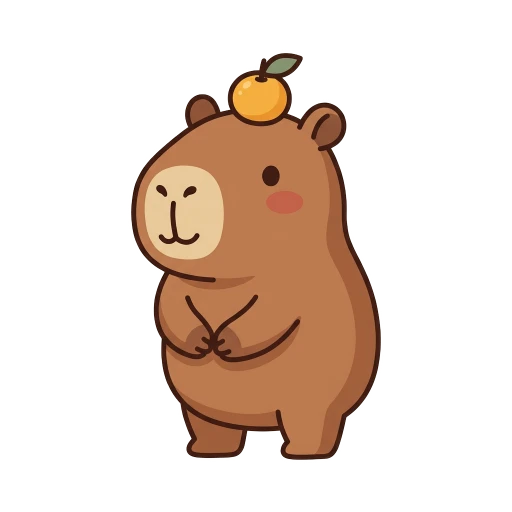

Halo, Capybara! 🌿
Pilih kuis dan belajar santai — pelan tapi pasti, seperti capybara.
🔬
Soal I
Ciri makhluk hidup, pengelompokan, pertumbuhan & perkembangan, wujud benda.
Mulai belajar 🧪Soal II
Wujud benda, ciri-ciri makhluk hidup, pengelompokkan, pertumbuhan dan perkembangan.
Mulai belajarDibuat untuk belajar santai • 🦫 capybara vibes